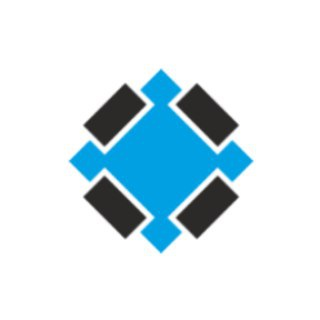

Thirdpin, thirdpin on TGViewer

Thirdpin
t.me/thirdpin
Ребята которые разрабатывают электронику. Hardware design, embedded, интернет вещей и светодиодные моргалки.
Связь –
@unalacuna
www.thirdpin.io